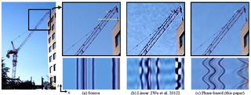
Phase-based video motion processing
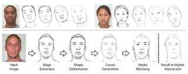
Style and abstraction in portrait sketching
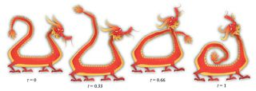
Planar shape interpolation with bounded distortion
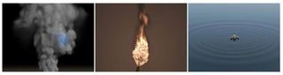
A new grid structure for domain extension
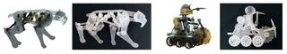
Computational design of mechanical characters
Global illumination with radiance regression functions
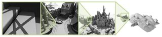
High resolution sparse voxel DAGs
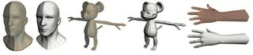
Sketch-based generation and editing of quad meshes
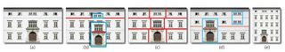
Layered analysis of irregular facades via symmetry maximization
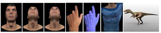
Thin skin elastodynamics
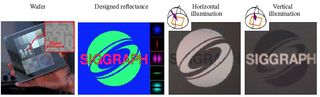
Fabricating BRDFs at high spatial resolution using wave optics
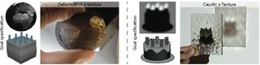
Spec2Fab: a reducer-tuner model for translating specifications to 3D prints
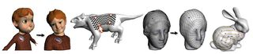
Weighted averages on surfaces
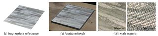
Bi-scale appearance fabrication
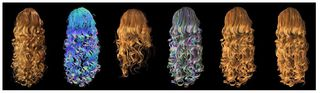
Structure-aware hair capture
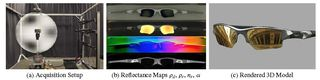
Acquiring reflectance and shape from continuous spherical harmonic illumination
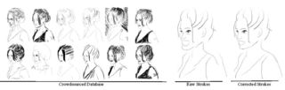
Real-time drawing assistance through crowdsourcing
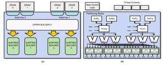
A hardware unit for fast SAH-optimised BVH construction
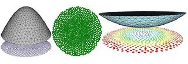
On the equilibrium of simplicial masonry structures
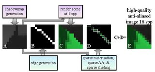
A4: asynchronous adaptive anti-aliasing using shared memory
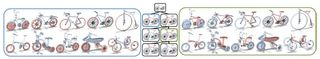
Co-hierarchical analysis of shape structures
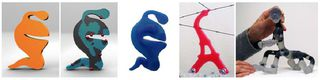
Computational design of actuated deformable characters

Modeling friction and air effects between cloth and deformable bodies
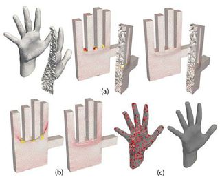
Injective and bounded distortion mappings in 3D
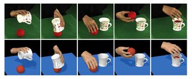
Video-based hand manipulation capture through composite motion control
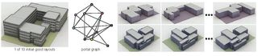
Generating and exploring good building layouts
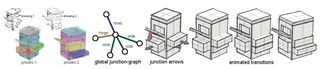
Interpreting concept sketches
A two-continua approach to Eulerian simulation of water spray
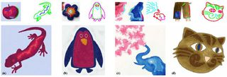
Painting by feature: texture boundaries for example-based image creation
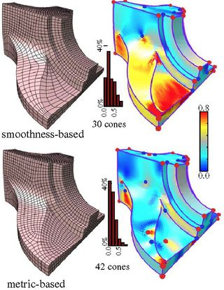
Controlled-distortion constrained global parametrization
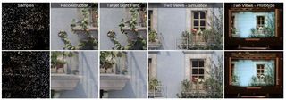
Adaptive image synthesis for compressive displays
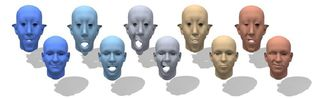
Map-based exploration of intrinsic shape differences and variability
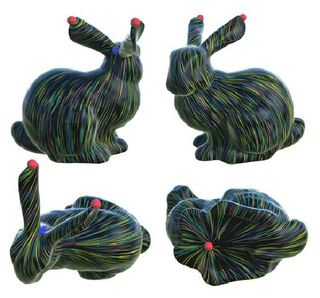
Globally optimal direction fields
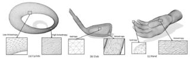
Particle-based anisotropic surface meshing
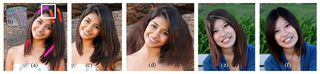
Dynamic hair manipulation in images and videos
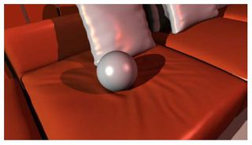
Embedded thin shells for wrinkle simulation
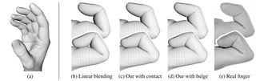
Implicit skinning: real-time skin deformation with contact modeling
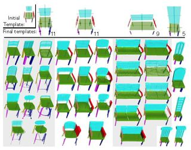
Learning part-based templates from large collections of 3D shapes

Automated video looping with progressive dynamism
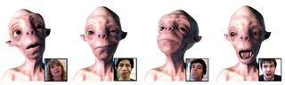
Online modeling for realtime facial animation
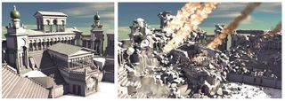
Real time dynamic fracture with volumetric approximate convex decompositions
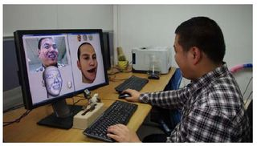
3D shape regression for real-time facial animation
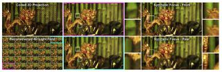
Compressive light field photography using overcomplete dictionaries and optimized projections
Scene reconstruction from high spatio-angular resolution light fields
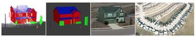
Semantic decomposition and reconstruction of residential scenes from LiDAR data
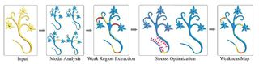
Worst-case structural analysis
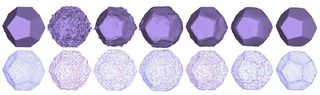
Mesh denoising via L0 minimization
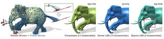
Two-layer sparse compression of dense-weight blend skinning
Computing self-supporting surfaces by regular triangulation
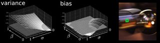
Fourier analysis of stochastic sampling strategies for assessing bias and variance in integration
Subspace fluid re-simulation
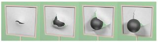
Adaptive fracture simulation of multi-layered thin plates
Sketch2Scene: sketch-based co-retrieval and co-placement of 3D models
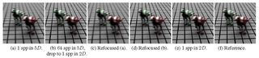
Line segment sampling with blue-noise properties
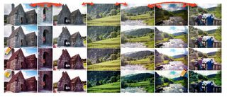
Optimizing color consistency in photo collections

Highly adaptive liquid simulations on tetrahedral meshes
Super space clothoids
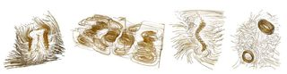
Opacity optimization for 3D line fields
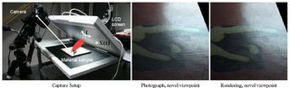
Practical SVBRDF capture in the frequency domain
Content-adaptive lenticular prints
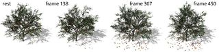
Interactive authoring of simulation-ready plants
An efficient computation of handle and tunnel loops via Reeb graphs
A sort-based deferred shading architecture for decoupled sampling
Non-polynomial Galerkin projection on deforming meshes
User-assisted image compositing for photographic lighting
Gradient-domain metropolis light transport
Probabilistic color-by-numbers: suggesting pattern colorizations using factor graphs
Position based fluids
Handwriting beautification using token means
InfraStructs: fabricating information inside physical objects for imaging in the terahertz region
Low-budget transient imaging using photonic mixer devices
Stylizing animation by example
Liquid surface tracking with error compensation
Designing unreinforced masonry models
Robust fairing via conformal curvature flow
Cubic mean value coordinates
Realtime facial animation with on-the-fly correctives
Parsing sewing patterns into 3D garments
Scalable real-time volumetric surface reconstruction
Cardinality-constrained texture filtering
Dense scene reconstruction with points of interest
RealBrush: painting with examples of physical media
Modular flux transfer: efficient rendering of high-resolution volumes with repeated structures
Subspace integration with local deformations
Integer-grid maps for reliable quad meshing
MeshGit: diffing and merging meshes for polygonal modeling
Femto-photography: capturing and visualizing the propagation of light
L1>-medial skeleton of point cloud
Perception of perspective distortions in image-based rendering
Example-based video color grading
Near-exhaustive precomputation of secondary cloth effects
Stereoscopic 3D line drawing
Bundled camera paths for video stabilization
Fabricating translucent materials using continuous pigment mixtures
Robust inside-outside segmentation using generalized winding numbers
Efficient preconditioning of laplacian matrices for computer graphics
Make it stand: balancing shapes for 3D fabrication
Dynamic element textures
OpenFab: a programmable pipeline for multi-material fabrication
Folding and crumpling adaptive sheets
Terrain generation using procedural models based on hydrology
Rectangling panoramic images via warping
Depicting stylized materials with vector shade trees
AIREAL: interactive tactile experiences in free air
Image-based reconstruction and synthesis of dense foliage
Putting holes in holey geometry: topology change for arbitrary surfaces

Axis-aligned filtering for interactive physically-based diffuse indirect lighting